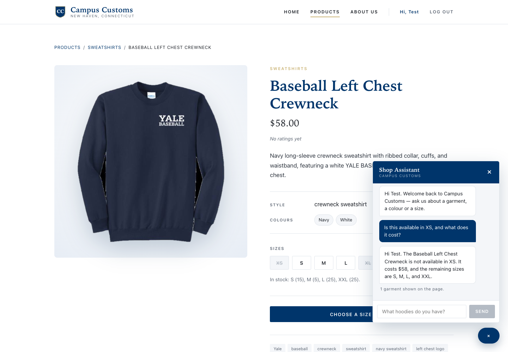
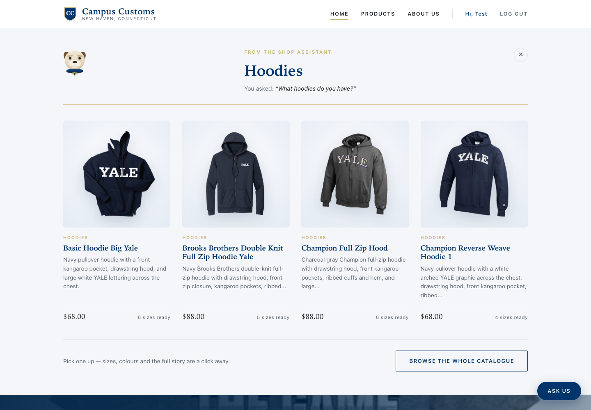
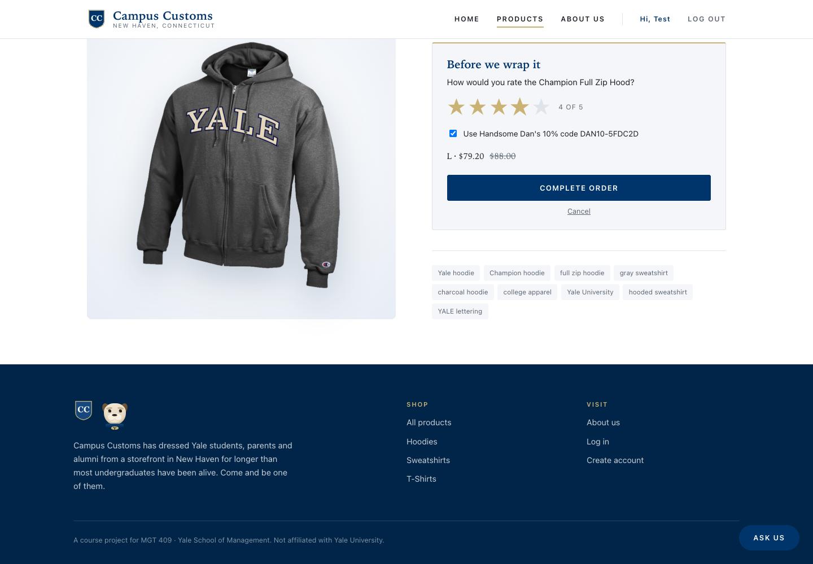

Campus Customs · MGT 409
Three checks run against the live site, each one photographed as it happened.
Every figure shown was compared against data/campus_customs.db afterwards.
| # | Check | What it proves | Result |
|---|---|---|---|
| 1 | Chat checks a stock level | The assistant reads real stock and price from the database | Pass |
| 2 | Category question draws cards | A chat search puts product cards on the page itself | Pass |
| 3 | Star rating when buying | The Problem 9 rating feature works in the live app | Pass |
Asked on the product page: “Is this available in XS, and what does it cost?”

Checked against the database.
SELECT size, quantity FROM inventory WHERE product_id='baseball-left-chest-crewneck'
returns XS 0, S 15, M 5, L 25, XL 0, XXL 25, and the catalogue
price is 58.0 — exactly what was said. Note also that the question said only
“this”: the agent knew which garment was meant because the page context travels
with every message.
Asked from the home page: “What hoodies do you have?”

Why this is the real thing. The agent returns only product ids; the server looks each one up and builds the cards from the database, so no price or stock figure on a card is written by the model. These are the same cards the catalogue uses, so clicking any of them opens that product’s own page.
On the Champion Full Zip Hood, size L chosen, then Buy pressed.

What happens on Complete order. The purchase is written to
purchases and the rating to product_ratings, carrying the
purchase_id — so every rating in the database belongs to someone who
actually bought the garment. The average then appears on the product page for the next
shopper.